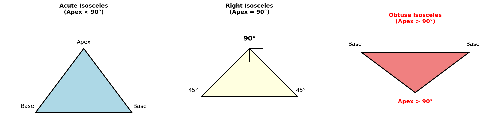
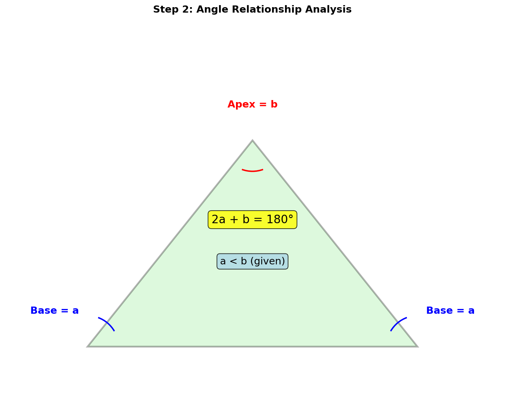
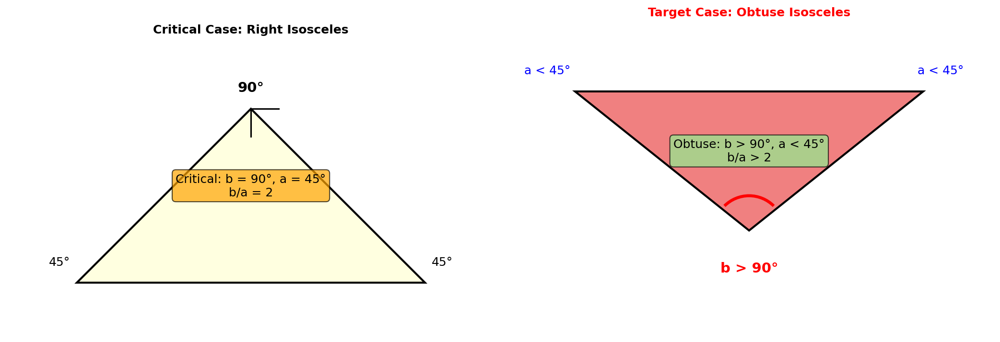
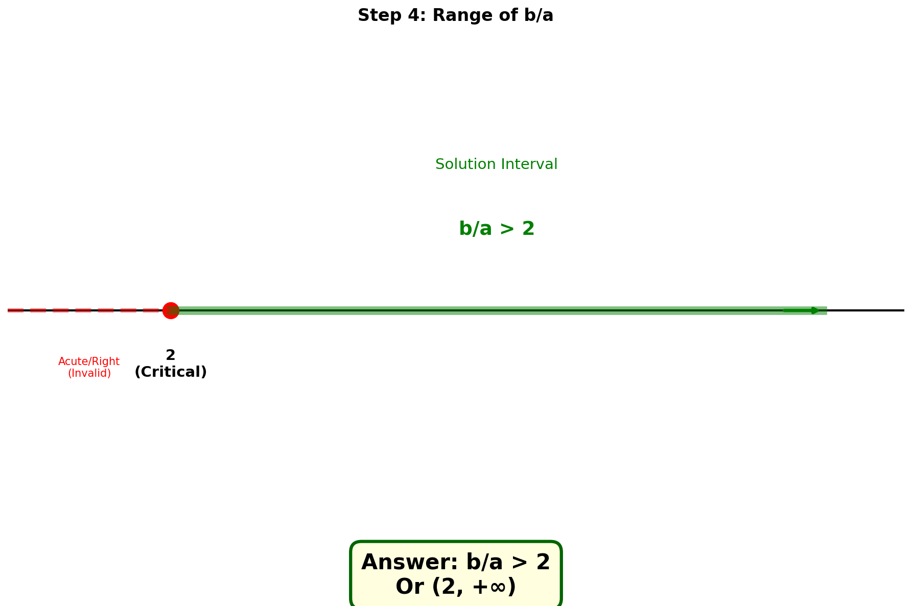

🎯 题目
等腰三角形的两个内角的度数之比为 a:b (a < b)，
若这个三角形是钝角三角形，
求 b/a 的取值范围。
1
理解题意
等腰三角形有三种可能的角的组合，我们需要分析哪种情况可能形成钝角三角形。

💭 思考：等腰三角形的角可能是什么形式？
?
提示1：设底角为a，顶角为b
✓正确！设两个底角都是a，顶角是b，则三个角为(a, a, b)。根据内角和：2a + b = 180°
?
提示2：设顶角为a，底角为b
✗有问题：如果顶角是a，底角是b，则a + 2b = 180°。但题目说a < b，这样顶角a会很小，很难形成钝角三角形。
2
分析角度关系

设等腰三角形的三个角为：底角 = a，底角 = a，顶角 = b
2a + b = 180°
3
临界情况分析

关键发现：由于 a < b，b 是最大的角。
如果三角形是钝角三角形，必然是 b > 90°
💭 思考：当 b = 90° 时是什么情况？
?
提示：计算此时的 a 和 b/a
✓当 b = 90° 时，2a = 90°，a = 45°，此时 b/a = 2。这是直角三角形，是临界情况。
4
求解取值范围

最终答案
b/a > 2
或写成 (2, +∞)
5
总结
🎯 解题思路
- 确定角度关系：设底角为a，顶角为b，得 2a + b = 180°
- 分析钝角位置：由于 a < b，钝角只能是顶角 b
- 建立不等式：b > 90°，代入得 a < 45°
- 计算比值：b/a = 180°/a - 2 > 2
💡 解题技巧
- 看到等腰三角形 → 立即设未知数表示各角
- 看到取值范围 → 找临界情况（直角是锐角和钝角的分界）
- 验证答案 → 取特殊值代入验证